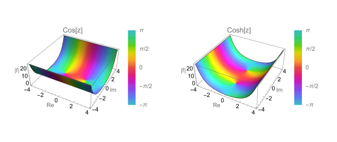
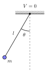

Yijia Zhao
Posts
Downloads
About
Posts
RSS
Categories
All
(2)
Casual
(1)
Classic Mechanics
(1)

Building process of this blog
Casual
This blog is built by Quarto, which is a powerful open-source scientific and technical publishing system built on Pandoc (written by AI in vscode).
Feb 16, 2026
Yijia Zhao

Test post: Euler-Lagrange’s equation in simple pendulum
Classic Mechanics
Here is the
Euler-Lagrange’s equation
:
Feb 7, 2026
Yijia Zhao
No matching items
This site works best with JavaScript enabled >_<